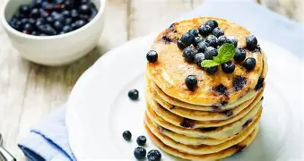
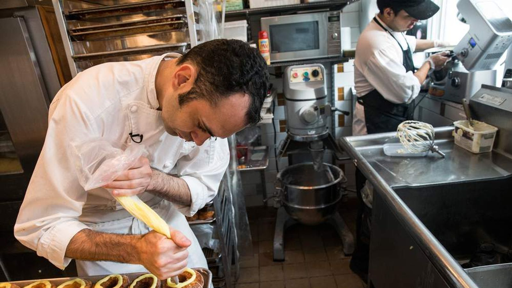

Descubra segredos e curiosidades por trás da alta gastronomia, onde a culinária se encontra com a inovação e criatividade.
O início de uma experiência memorável
Muito antes do prato chegar à mesa, chefs e suas equipes dedicam horas ao planejamento de cada detalhe. A escolha criteriosa dos ingredientes, a harmonia entre sabores e a apresentação cuidadosa são essenciais para transformar uma refeição em uma experiência inesquecível.

Em restaurantes sofisticados, cada elemento é pensado para despertar os sentidos e proporcionar momentos únicos aos clientes.
A excelência nos detalhes
A alta gastronomia vai muito além do sabor. O ambiente, a iluminação, a música e a qualidade do atendimento fazem parte da experiência. O objetivo é criar uma atmosfera elegante e acolhedora, onde cada visitante se sinta especial.

A apresentação dos pratos também é considerada uma forma de arte. Cores, texturas e composições são cuidadosamente elaboradas para encantar os olhos antes mesmo da primeira degustação.
Grandes chefs acreditam que uma refeição perfeita é aquela capaz de despertar emoções e criar memóriasfetivas que permanecem por muitos anos.
Então é isso! Esperamos que você tenha apreciado esta leitura e conhecido um pouco mais sobre o fascinante universo da culinária sofisticada. Será um prazer recebê-lo para viver uma experiência única em nosso restaurante.